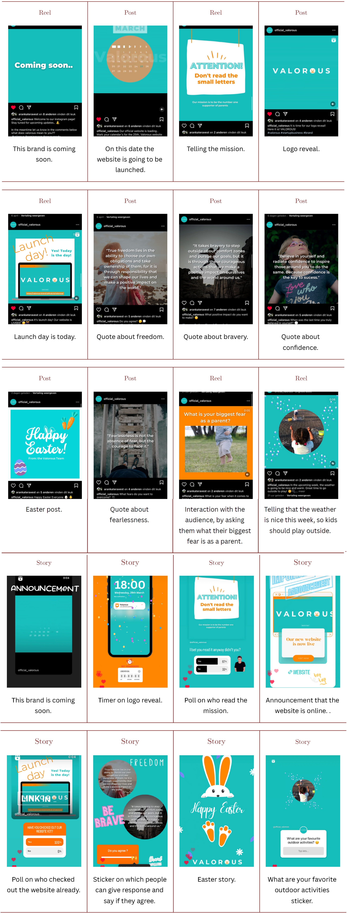

General Information
This branded website is publicly available at valorous-brand.github.io/valorous
This website was created by:
- Sholyan Orman (ID: 200649)
- Aranka ter Avest (ID: 214403)
- Vita Luijten (ID: 211174)
- Steffen Lange (ID: 226463)
Content
Please clarify here the match between students and pieces of content. Make sure that you provide a link to the correct page within the website
| # | Student ID | Value | Name and link of content |
|---|---|---|---|
| 1. | 200649 | Freedom, product text |
Also on Landing page, Product description |
| 2. | 214403 | Confidence |
Also on Landing page |
| 3. | 211174 | Fearlessness |
Also on Landing page |
| 4. | 226463 | Bravery, mission text |
Also on Landing page, mission copy |
Production
Design Elements
Please provide a list of design elements alongside their justifications:
-
Our color scheme features two bright and intense colors to match our logo and brand identity. Through that we want to grab attention and say: "Here we are, the brand you have been waiting for!" We want to stand out and be rememberable to visitors. That is also why we did not go for more colors than cyan, orange and white. We want to make a clear and defined impression that stays in mind.
- #17BEBB Cyan is perceived as a relaxing but also inspiring color. It represents the youth, liveliness and energy, that young parents are missing so often after having children. It lets visitors dream of a carribean beach and thereby connects to our value freedom.
- #FF8600 Orange signifies energy, enthusiasm, vitality and happiness. That supports our message of being brave and facing your challenges. It is meant to encourage our users in every way and make us perceived energetic and happy. It speaks: "We take initiative!"
- For the font we went with Monserrat in different widths. It is a very popular font on brand websites because of the geometric and elegant simplicity of its typeface. It is a font that is easy to read and has a clear and structured look. It is meant to make reading more easy and also goes with our mission because we want to make the life of parents less complex. Important phrases that we want to bring extra attention to will be displayed bold.
- Justification for website elements:
- The content on our website is structured as follows:
- Justification for navigation:
Because we need to raise money through that website, we decided that the landing page and the product & funding page will be the most important parts. So we knew that everyone was going to start on the landing page and we had to make sure that people would come to the funding page. We made it more accessible trough for example the button on our landing page that users are dared to click. If a person would want to know more about the team or our social media (which almost all of them come from) they can also easily access is through the navigation bar at the top of the page. - Design relations:
- The website's design fits with our values and brand personality through a clean, easy and round look. We are using the color palette of our brand from the style guide to represent our values and intentions. Nearly all element (pictures, sections, modals) are designed with rounded corners to give an easy and friendly impression.
- The website fits our marketing strategy through a focus on our product and the funding of our brand. While we drive traffic to the page through Instagram, we want potentional customers to get to know our brand more in depth, get in touch with us and most importantly present our solution to their problems and promote our product to generate funding.
- The website shows the unique value proposal of our product through the tone of voice of our content pieces and the overall look and feel. We want to give them an easy experience and already make them feel a bit relieved when only thinking about the advantages of our product.
The navigation bar consists of 5 different buttons that redirect to each page and is the same for every page. The font is white and turns darker when hovering over an element. A black font color indicates the page that the user is currently on. On a smaller screen (e.g. smartphone, tablet) the navigation bar turns into a burger menu to ensure an easy navigation and good user experience across all devices.
The footer is the same for every page. It shows a trademark notice on the left side and has buttons for Instagram and GoFundme on the right side.
For the Landing page we are using a carousel to grab the visitors attention. It is meant to get the user curious about our brand, product and services and should make him/her want to click the button below. Next, the user can read about our mission more in depth and get to know what our brand is about and who it is exactly for. Below that, we placed a grid of responsive cards that depict our values. We do not want to have too much text on that page, so we decided to only show about a sentence per value and then place a button for the people that want to read more about a particular value of ours.
On the Product & Funding page we are using bootstrap hero sections for catching attention and presenting the product in a visual and explanatory way through pictures and text. It uses the space very efficiently and links the images to the text. The funding section is build similarly and presents the different rewards that everyone can get when choosing to support us financially.
The Social Media page uses a service template by elfsight to display all of our latest instagram posts. It updates automatically so it can always show the latest posts in real time.
For our Team & Contact page we using a contact form, so that our potentional funders can instantly get in touch with us, without having to write an e-mail or call us. After that, there is a grid which shows further contact information like our address, mail, and phone number.
And for the team introduction we used the same cards from the landing page in a responsive grid with images and texts to give visitors an impression of who we are and tell something about ourselves and our intentions.
Landing page: brand name, logo, vision, values, call to action (funding)
Products & Funding page: product, funding tiers, funding possibilities
Social Media page: showcase of instagram activity
Team & Contact page: contact form, team introduction
Corporate page: justifications
Every page: logo, social media button and copyright notice
Credits
Links and credits for third-party elements:
- Modal overlay code & tutorial:
- Instagram Widget:
- Product images:
- Value images:
https://codepen.io/bradtraversy/pen/zEOrPp
https://www.youtube.com/watch?v=6ophW7Ask_0&t=2s
https://pixabay.com/photos/clock-smart-children-s-watch-1523531/
https://pixabay.com/photos/clock-smart-children-s-watch-1523527/
https://unsplash.com/photos/r2nJPbEYuSQ
https://unsplash.com/photos/wx3JOq0Xbh4
Testing Report
- Testing goal:
- We want to know the impressions and thoughts that the user gets from looking at our page to compare them to what we want to achieve. Also, we want to test the usability and intuitivity of navigating through our website.
- Our testing method:
- The test’s participants: 3 different parents (one parent each) within our target group (children below 5 years)
- The test’s setting: the tests were done partly in person as well as remotely online. First the participants get the link to our site, then they are presented with a few tasks to navigate through the website,find information, and use certain elements like the naviagtion, buttons, and forms.
- The test’s protocol: (for both in person recording and remote recording)
- Tasks:
- 1. Read more about confidence
- 2. Find the contact form and use it
- 3. Find our instagram page
- 4. Try out the website yourself and have a look around
- Questions:
- 1. What comes to your mind looking at our landing page?
- 2. How do you like the overall design?
- 3. How intuitive is the navigation? What could make it better?
- 4. Could you read everything well?
- Our testing results:
- Positive aspects:
- 1. The landing page instantly makes users curious and gets them to go to the funding page
- 2. Easy navigation
- 3. Coherent design across the pages
- 4. Appealing look, colors
- Negative aspects:
- 1. Product should be visible on the landing page
- 2. Speed of the landing page carousel is too fast
- 3. Hyperlink colors on the corporage page are too similar to the background
- Improvements that would be implemented on the final website:
- Making the contact form work (back-end)
- Making a real GoFundMe-Page
- Implement product onto landing page
- Our brand and objectives
- Promotional activities
- Our promotional activities on Instagram were designed to help us reach our objectives of gaining followers, creating a sense of community, and driving traffic to our website. To achieve these goals, we focused on creating engaging and valuable content that resonated with our target audience. By using hashtags such as #valorous, #comingsoon, and #safetyfirst, we were able to reach a wider audience and attract people who were interested in our brand and what we had to offer.
By reposting content on our profile, we create a sense of community and engagement with our followers. We conducted Q&A sessions and polls in our stories to encourage interaction and foster a deeper connection with our audience.
By including a link to our website in our bio and reposting all reels and posts in our stories, we were able to drive traffic to our website and increase visibility. By setting specific response objectives of receiving a total of 250 likes on Instagram and driving 50 people to our website, we were able to measure the effectiveness of our marketing efforts and adjust our strategy accordingly. - Expectations:
In terms of the execution of our plan, we had certain expectations that were met and others that were not. We expected that it would be challenging to gain a lot of followers within the first month of our promotional campaign, but we hoped to reach a wider audience by using Reels and creating engagement through the use of stickers in our stories. Specifically, we expected that by posting and reposting multiple times per week, we would be able to attract more followers and create a sense of community around our brand. - Results
Our initial reach objectives were to gain 150 followers and reach 200 accounts within the first month. However, after a month of promotional activities, we only managed to gain 43 followers and reach 211 accounts. Although we reached our target audience, we were not able to convince them to follow and engage with us as much as we hoped. Furthermore, we aimed to receive a total of 250 likes on Instagram and drive 50 people to our website. However, we only received 70 likes in total and managed to drive only 18 people to our website through the link in our bio. - Reflection:
Reflecting on our experiences executing our Communication & Media Plan, we learned that promoting through social media requires a lot of time and effort. We realized that reflection and analysis are essential to truly understand what works and what doesn't.
From these experiences, we learned that it's essential to focus on our audience's behavior and preferences while creating content. We also learned that it's important to keep track of our progress and make adjustments as needed to improve our marketing efforts. Finally, we learned that engagement is key, and fostering a sense of community with our followers is crucial to achieving our marketing objectives.
Through our promotional activities, we learned that using Reels on Instagram is more effective in terms of reach than regular posts. Although we received more likes on posts, we noticed that Reels generated more views and engagement. For instance, we reached 208 people through Reels, 56 people through regular posts, and 28 people through Stories. This clearly shows that using video content can be more impactful in attracting viewers. However, we also discovered that Stories are crucial for interaction as people tend to engage more with features like polls and Q&A. On the other hand, we found that using stickers in our Stories was not as effective as we had hoped, as it did not significantly increase engagement. - Improvements:
Based on our learning points, we plan to improve our promotional activities in the following ways: - 1. More focus on Reels: We noticed that Reels have a greater reach and attract more viewers. In the future, we plan to create more Reels to improve our reach and engagement.
- 2. More interaction through stories: Stories are an effective way to encourage interaction and engagement from our followers. We plan to use more polls, Q&A sessions, and other interactive features in our stories to encourage our followers to engage with our content.
- 3. Analyzing and adjusting our content: We plan to analyze our content performance on a regular basis and make adjustments based on our findings. For example, if we notice that certain types of posts are receiving more engagement, we will create more content in that vein.
- 4. Collaborations and Influencer marketing: We plan to collaborate with other brands and influencers to expand our reach and introduce our brand to new audiences.
- 5. Use paid promotion: While we would like to rely on organic growth, we recognize that paid promotion can be an effective way to increase our reach and promote our brand to a wider audience. Therefore, we plan to allocate a budget for paid promotion to reach more people.
- New objectives:
-
Reach objectives:
- Increase our followers on Instagram by 30%, from 43 to 56 followers
- Reach 300 accounts through our promotional activities, including collaborations and paid promotion
-
Affect objectives:
- Increase the number of likes on our posts and Reels by 20%
- Increase the number of website clicks from 18 to 25
-
Response objectives:
- Increase the number of comments on our posts and stories by 30%
- Increase the number of direct messages received by 50%
-
Reach objectives:
- New content calender:
- The problem that we encountered most concering parents with young children under the age of five years old was safety. Safety, when their children aren’t around, being careful not to make their child choking hazards, having a safe environment for their child at home regarding ‘cabinets, pointy furniture and more.
- We as a brand solve our target audience’s problems by providing them with a SafeLink watch to relief their current concerns. The SafeLink watch has many features and will help parents feel at ease. This waterproof smart watch features include: monitor the child’s heart rate, location, sos button, easily accessible from parent to child communication through emojis reaction ‘a few emojis will pop on the watch depending on the answer of the child it may continue or not but an example would be one will be a angry face or smiley face this helps with the child’s pick between these emojis and help with communicating their emotions this is especially important for non-verbal children. The SOS button can help in cases of severe dangers such as a child choking when a parent isn’t around by making a loud noise around the child but also notifying the parent through their mobile device. Keeping the location of their child helps soothe their concerns when the child isn’t around but also in cases of miscommunication, child wandering off and more.
- Our target audience is parents living in Europe with children under ages of five years old. Parents with concerns about outdoor and indoor activities regarding the safety of their child. Parents being able to feel at ease while their children are away or while their cook but being able to lay their eyes of off them for a few minutes without stressing. The desire to keep them healthy and safe when it comes to food or choking hazards.
- Giving parents satisfaction and sense of relief that their children are safe when they are and aren’t around.
- Our advantages as a brand would include having a smart watch with so many features specifically for the parents needs but also their children. Waterproof, location and mood tracking, different forms of colours to the users benefit with a built in SOS alarm. Our product looks like a typical children’s watch and cannot be noticed to the human eye of its set-in benefits.
- Our brand has both an official Instagram page and a website. We reach them through a series of post that are relatable to the customer. Further through our page customers can purchase our product and three different tiers.
- According to our Instagram insights within the past 90 days valorous has reached 211 Instagram accounts, 15 accounts engaged during this period and gained 43 followers. Our biggest reach on one of our valorous posts has been a reel. This reel reached 158 Instagram accounts 18 of these accounts were valorous followers and 140 non-followers this reel has also been played 167 times. When it comes to our website analytics within the last 90 days valorous has a page view of 362 event count, 279 user engagements and 16 clicks. Our most viewed tab of our website would be the home page with an amount of 222 views and the funding tab coming at second with 43 views. Valorous has different countries as users according to the analytics countries such as Netherlands, Germany, Finland, Austria, France Poland, and Curacao. Out of all the countries the Netherlands has a ranking with the highest number of 36 users and for least user’s curacao comes in last with an amount of 1 user. User activity for the past 30 days reached a total number of 55. The average engagement time is two minutes.
*Look at Appendix for website analytics and Instagram insights. - Valorous biggest revenue streams come from our product SafeLink and three different funding tiers.
SafeLink watch per unit: 200 euros.
Additional choice of another bracelet colour per unit: 16 euros. - Our current Funding Tiers:
Bronze Tier 1:
Our bronze tier provides customers with sneak peaks to our newly released products and weekly newsletter updates. This tier rate charge comes at a price of 20 euros.
Silver Tier 2:
Our silver tier provides customers with a chance to give their opinions on what can be included in the product itself such as: colours or shape of the screen. This marketing tactic is to make the user feel more involved in the production and more likely to buy the product. This tier rate charge comes at a price of 55 euros.
Gold Tier 3:
Our gold tier gives costumers the chance to be on the list of testing our prototype of latest product, a box of 3 different watch colour bracelets to choose from and entry in our yearly giveaway. This tier rate comes at a price of 120 euros. - Silicone watch bracelets per unit: 16 euros.
Watch screen and parts in total: 184 euros.
184 euros + 16 euros= 200 euros.
Fully finished product per unit: 200 euros.
Cost per unit x number of units= Variable cost
200 euros per product x 10 units = 2.000euros
Total cost of production – variable cost per unit x units produced = fixed costs
2.000 euros – (200 euros x1 unit) 200 x 10 units = 18.000 euros in fixed costs - Source 1
Source 2 - We as valorous developed the watch SafeLink to provide service to our customers. SafeLink was made with the intention of helping parents feel more relaxed when their child isn't around and still being of use when the child is around. SafeLink is a watch made for children of the ages of one till 10-year-olds. SafeLink works by tracking the child's location, communicating nonverbally with emojis, heart rate monitor and SOS alarm for any dangerous situations. SafeLink comes in different sizes and colours depending on the customer’s desire. We as valorous believe that in taking our customers concerns and providing them with a solution will make them feel at ease and prevent further stress, worry and more.
- Choices made:
Regarding problems we had a few quite a few ones to choose from and so we narrowed it down in the beginning to three different problems and after we focused purely on safety as the main problem. This choice was made after carrying out research through interviews with parents with children under the ages of five. Regarding solution we conducted more research by doing solution interviews with parents with children under ages of five on our prototype and we learned that out 9/10 parents were impressed with the prototype and are happy to give it a try once it is released. Participants did agree that a price of 10-50 euros would be ideal but when it comes to a better quality of the product and safety of their children, they would be interested in buying the product for a higher price. - Trademark:
As a brand we went through several names for our trademark. We wanted a trademark that would relate to parents and sounded powerful but also catchy. With several research on different brands names and testing out our options we finally decided that our perfect trademark represents parents with young children goes by valorous. Valorous definition is showing great courage in the face of dangers. When it comes to parents with young children it's easy to want to protect their young ones at all costs and with valorous, we encourage them to provide them with healthy amount of freedom while also being there for them. Valorous reflects our mission and vision. - Analysis Existing alternatives:
We as valorous discovered that existing alternatives exist when it comes to our previous trademarks this pushed us to do better and put out a unique trademark. We discovered that the powerful presence the name valorous brings grabs the consumers attention and curiosity. Various existing alternatives exist regarding children trackers, watches and more however valorous watch SafeLink provides a high-end quality product and different features for our customers.
As a brand valorous is proud to say our trademark is unique and is consistent with our unique value proposition and our identity. - Content
- Production
- Marketing
- Management
Marketing
Context of campaign and promotional activities
Valorous is a brand that stands for confidence, courage, fearlessness, and freedom. Our media and communication plan is designed to achieve the following objectives:
1. Reach objectives: We aim to gain 150 followers and reach 200 accounts on Instagram within the first month of our campaign. This will establish a strong foundation of engaged followers interested in our brand and expand our visibility to a wider audience.
2. Affect objectives: We want to create a strong emotional connection with our target audience by fostering a sense of community and connection with our brand. Through engaging and valuable content on Instagram, we aim to cultivate a loyal customer base who becomes advocates for our products and services.
3. Response objectives: To measure the effectiveness of our marketing efforts, we aim to receive a total of 250 likes on Instagram and drive 50 people to our website. This will confirm the level of engagement and interest in our content and measure our Instagram content's effectiveness in creating conversions and ultimately driving sales.
Learning Points
Future Planning
By implementing these strategies, we believe that we can improve our promotional activities and achieve our goals more effectively.
Additionally, we plan to analyze our content performance regularly and adjust our content calendar as needed to ensure we are reaching our objectives.
Professionalism
Below all social media/online activities of the campaign are presented.
Management
Lean Canvas
Problem
Solution
Customer segments
Unique value proposition
Unfair advantage
Channels
Key metrics
Revenue streams
Cost structure
Services/products
Validation of Assumptions
Appendix
Below, links to certain elements and proofs are provided.